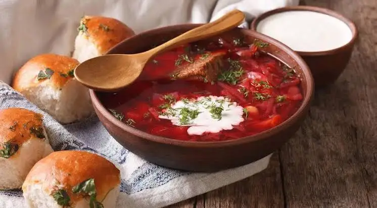
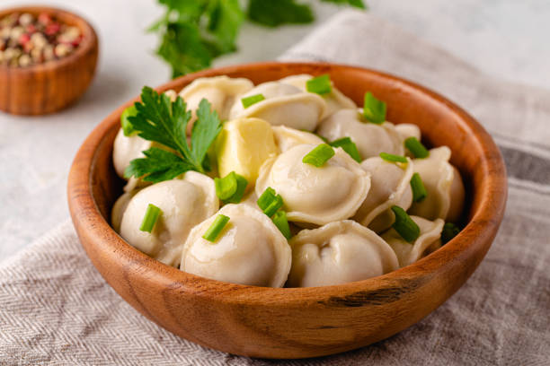
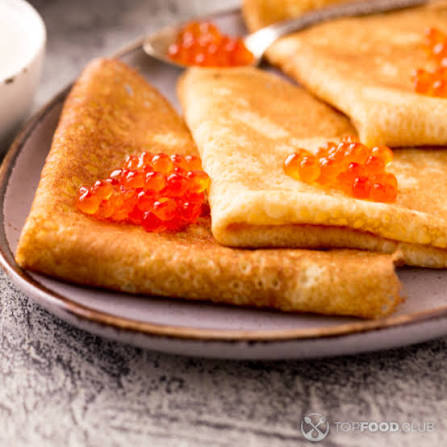
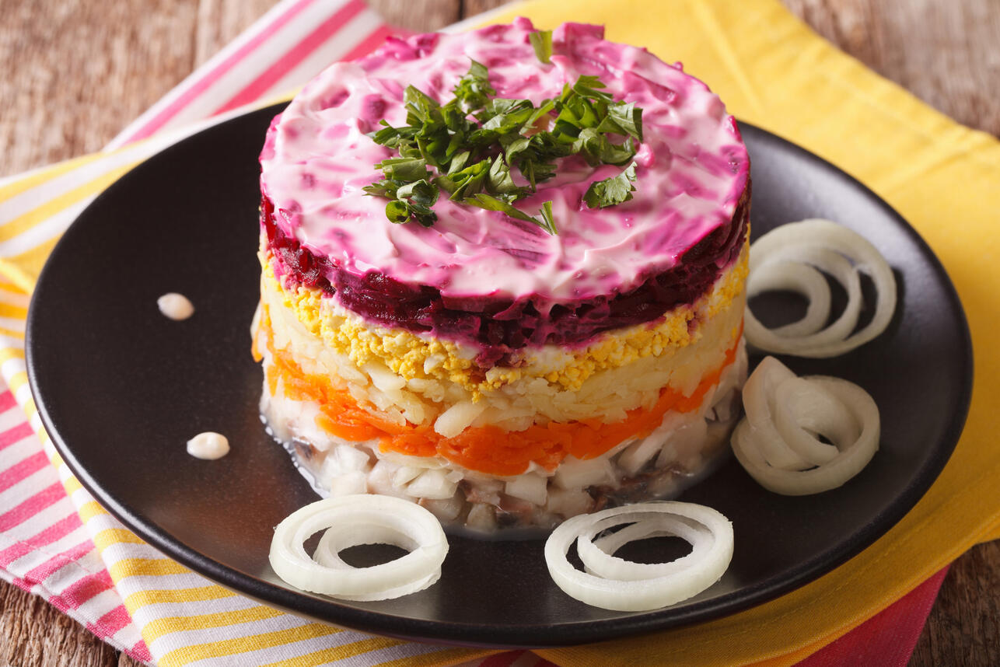
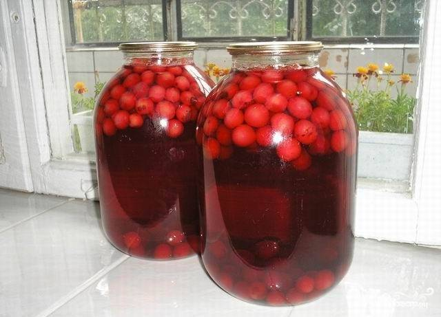
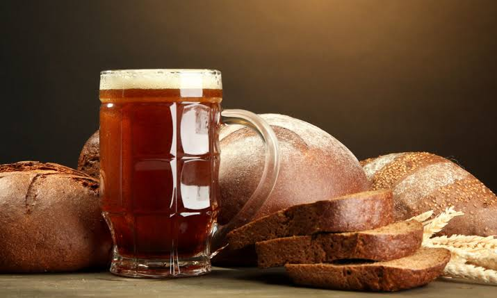
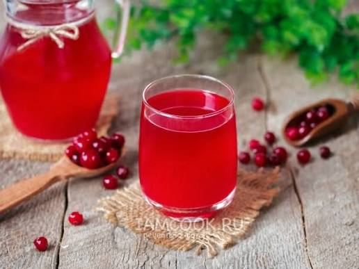
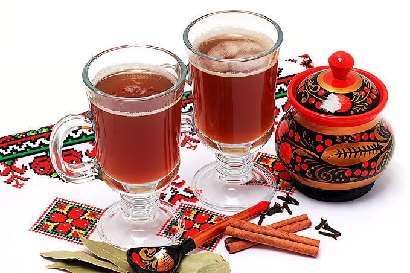

Borscht
A deep-red beetroot soup with cabbage, potato, and beef, simmered slowly until everything softens. It is traditionally served with smetana (sour cream) and dark rye bread. The colour alone is worth the trip.
Russian cuisine is built for cold weather — hearty soups, dumplings, and dishes designed to be shared. These four are the ones I'd put on the table for anyone visiting Moscow for the first time.

A deep-red beetroot soup with cabbage, potato, and beef, simmered slowly until everything softens. It is traditionally served with smetana (sour cream) and dark rye bread. The colour alone is worth the trip.

Small, crescent-shaped dumplings filled with minced meat and wrapped in a thin dough. They originated in Siberia but became a staple all over Russia. Boiled, then served with butter, dill, and sour cream — or sometimes just a splash of vinegar.

Thin pancakes made from wheat or buckwheat flour, cooked one at a time on a hot pan. They can be eaten sweet (with jam, honey, or condensed milk) or savoury (with caviar, smoked salmon, or sour cream). At Maslenitsa — the week before Lent — Russians eat them every day.

Селёдка под шубой — a layered salad of salted herring, boiled potato, carrot, beetroot, and egg, all held together with mayonnaise. The beetroot gives the top layer its signature bright pink colour. It is the classic dish for New Year's Eve and birthday tables.
Russian meals are washed down with something cold, tart, or lightly sweet — never rushed. These four are the ones you'll see on every table.

Компот is a sweet fruit drink made by boiling berries and fruit in water with a little sugar, then letting it cool. What makes it special is what floats — whole cherries, apple slices, dried apricots, or raisins bobbing at the top, like the tapioca pearls in bubble tea. Every family has its own recipe, and everyone claims theirs is the best.

A lightly fermented drink made from rye bread — yes, really. It tastes a bit like a fizzy, mildly sour beer, but with almost no alcohol. Sold from street tanks in summer and drunk ice-cold. An acquired taste, and one worth acquiring.

A tart juice made from cranberries or other sour berries. It is older than kompot and can be served cold in summer or warm in winter. Deep red, faintly sweet, and slightly sharp on the tongue — it goes especially well with heavy dishes like pelmeni.

A hot honey-and-spice drink that predates tea in Russia. Made with honey, water, and spices like cinnamon, cloves, and ginger — sometimes with a splash of fruit juice. It is what you drink on a −20°C day, standing outside after a walk, hands wrapped around a mug.
If you visit, don't rush. Russian meals are slow by design — soup first, then a main course, then tea. Order a kompot (fruit drink) or just black tea, and take your time. The food tastes better that way.